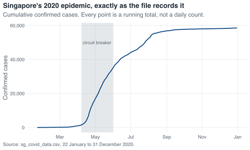

here()
#> [1] "/Users/swapnil/Documents/GitHub/r-intro"5 Reading the epidemic in
Everything in this book runs on one file: sg_covid_data.csv, 345 rows covering 22 January to 31 December 2020, one row per day. Up to now read_covid() has been supplying it. This chapter covers what that function does and what happens at import more generally.
Import is a common source of errors, and most of them are silent. A date column arrives as text and the time series plots in alphabetical order. A missing value coded as -99 arrives as a number and the mean is wrong. A leading zero disappears from a postcode. None of these raise an error. Most are caught by reading the messages R prints at import time, which is why this book leaves those messages switched on.
5.1 Where the file is
R has a working directory: the folder it treats as “here” when you hand it a relative path. Scripts often set it explicitly, with a line such as setwd("/Users/swapnil/Documents/GitHub/r-intro"). That path is specific to one machine, so the script fails for a colleague, after the folder is moved, or on a teaching-lab computer.
here::here() avoids the problem. The here package looks upward from wherever R happens to be until it finds the top of the project, identified by an .Rproj file, a .git directory or a _quarto.yml, and builds paths from there.
That is this project’s root on the machine that rendered this page; on another machine here() returns that machine’s project root, so paths built from it resolve to the same files. Naming the folders as separate arguments lets it assemble a path with the correct separator for Windows, macOS or Linux.
here("data", "sg_covid_data.csv")
#> [1] "/Users/swapnil/Documents/GitHub/r-intro/data/sg_covid_data.csv"Writing here("data", "sg_covid_data.csv") costs a few extra characters and leaves the script working on any machine where the project has been cloned, whatever directory R was started from.
5.2 read_csv()
readr’s read_csv() takes a path and returns a tibble.
covid <- read_csv(here("data", "sg_covid_data.csv"))
#> Rows: 345 Columns: 13
#> ── Column specification ────────────────────────────────────────────────────────
#> Delimiter: ","
#> chr (1): administrative_area_level_1
#> dbl (11): confirmed, deaths, stringency_index, government_response_index, c...
#> date (1): date
#>
#> ℹ Use `spec()` to retrieve the full column specification for this data.
#> ℹ Specify the column types or set `show_col_types = FALSE` to quiet this message.That block of text is a message rather than an error, and each line of it is worth reading.
Rows: 345 Columns: 13. Check this against what you expect before you do anything else. If you were told the file covers a year of daily data and R reports 345 rows, that is 2020 from 22 January onward, and it adds up. If R had said 344, you would want to know which day went missing and why.
Delimiter: ",". readr worked out the separator by looking at the first few lines. Files exported from European locales often use a semicolon, because the comma is doing duty as a decimal point; read_csv2() handles those.
chr (1), dbl (11), date (1). These are the guessed column types. Three points matter here.
date came in as a real Date, not as text. readr recognises the ISO 8601 form YYYY-MM-DD and parses it. Because of that, you can subtract one date from another, sort chronologically, and pass dates directly to ggplot().
Every count is dbl, not integer. readr’s guesser does not distinguish whole numbers from decimals; anything numeric arrives as a double. Nothing goes wrong as a result, but it explains why confirmed is <dbl> when it counts people.
One column is chr. That is administrative_area_level_1, the constant “Singapore” you met in Section 4.4.
The two lines at the bottom are hints rather than warnings. spec() prints the full specification, one line per column, which is what to use when the summary is truncated with a ...:
spec(covid)
#> cols(
#> administrative_area_level_1 = col_character(),
#> confirmed = col_double(),
#> deaths = col_double(),
#> date = col_date(format = ""),
#> stringency_index = col_double(),
#> government_response_index = col_double(),
#> containment_health_index = col_double(),
#> retail_and_recreation_percent_change_from_baseline = col_double(),
#> grocery_and_pharmacy_percent_change_from_baseline = col_double(),
#> parks_percent_change_from_baseline = col_double(),
#> transit_stations_percent_change_from_baseline = col_double(),
#> workplaces_percent_change_from_baseline = col_double(),
#> residential_percent_change_from_baseline = col_double()
#> )The empty format = "" on date means readr used its own ISO guesser rather than a format you supplied. The other hint offers show_col_types = FALSE to silence the message. That is reasonable once you have read the message and stated the types explicitly, as in Section 5.4; before then the message is the only report you get on how the file was parsed.
5.2.1 The dates readr cannot guess
readr guesses dates only for the ISO form. Any other layout is read as character, without a warning, because text is a valid column type and there is nothing for readr to object to.
read_csv(I("date,cases\n07/04/2020,106\n08/04/2020,142\n"))
#> Rows: 2 Columns: 2
#> ── Column specification ────────────────────────────────────────────────────────
#> Delimiter: ","
#> chr (1): date
#> dbl (1): cases
#>
#> ℹ Use `spec()` to retrieve the full column specification for this data.
#> ℹ Specify the column types or set `show_col_types = FALSE` to quiet this message.
#> # A tibble: 2 × 2
#> date cases
#> <chr> <dbl>
#> 1 07/04/2020 106
#> 2 08/04/2020 142The column comes in as <chr>. 07/04/2020 is 7 April under day-first conventions and 4 July under month-first ones, and only knowledge of the source can settle which was meant. State the format explicitly, using the same %d, %m, %Y codes that strptime() uses:
read_csv(
I("date,cases\n07/04/2020,106\n08/04/2020,142\n"),
col_types = cols(
date = col_date(format = "%d/%m/%Y"),
cases = col_double()
)
)
#> # A tibble: 2 × 2
#> date cases
#> <date> <dbl>
#> 1 2020-04-07 106
#> 2 2020-04-08 1425.2.2 Missing values that are not blank
read_csv() treats an empty cell and the literal string NA as missing. Health data rarely obliges. If your file codes missing as -99, ., N/A or Not reported, say so, or those values will be read as data:
read_csv(
here("data", "some_other_file.csv"),
na = c("", "NA", "N/A", "Not reported")
)With a numeric sentinel such as -99, nothing will appear to be wrong: the minimum will be -99, the mean will be pulled downward, and every graph will still render. Checking the minimum and maximum of each numeric column after import will usually reveal a sentinel of this kind.
5.3 What read.csv() would have given you
Base R has its own reader, spelled with a dot instead of an underscore. Older course notes generally use it, so it is worth recognising, and the two names are similar enough to be typed interchangeably by mistake.
No message at all, a plain data.frame rather than a tibble, and date is a character vector of strings that look like dates. Arithmetic on that column fails:
old$date - old$date[1]
#> Error in `old$date - old$date[1]`:
#> ! non-numeric argument to binary operatornon-numeric argument to binary operator reports that the subtraction was attempted on text. This is why base-R instructions usually include a line such as df$date <- as.Date(df$date) near the top; with read_csv() the conversion has already happened.
There are two smaller differences. read.csv() returns int for whole-number columns where read_csv() returns dbl, and before R 4.0.0 it converted character columns into factors, the historical default described in Section 4.3. It is also slower on large files, though at 345 rows the difference is not perceptible.
read.csv() works and you may use it. This book uses read_csv() because it reports the column types it assigned, and read.csv() reports nothing.
5.4 Pinning the types
Guessing is convenient when exploring a new file and less suitable for a script that runs every month. readr guesses from the first 1,000 rows by default, so a column that is numeric for a thousand rows and contains the word pending on row 1,500 will be guessed wrong. When the following month’s file differs, the guess differs with it, and the code produces different numbers without reporting the change.
The remedy is to state the types. cols() lets you name the ones that matter and set a fallback for the rest:
covid_pinned <- read_csv(
here("data", "sg_covid_data.csv"),
col_types = cols(
administrative_area_level_1 = col_character(),
date = col_date(format = "%Y-%m-%d"),
.default = col_double()
)
)
dim(covid_pinned)
#> [1] 345 13No specification message this time, because there was nothing to guess. The quickest way to write one of these is to read the file once, run spec(), and paste the output into the script as the col_types argument. The import then either matches the stated specification or reports where it does not.
For example, state that every column is numeric, including the two that are not:
bad <- read_csv(
here("data", "sg_covid_data.csv"),
col_types = cols(.default = col_double())
)
#> Warning: One or more parsing issues, call `problems()` on your data frame for details,
#> e.g.:
#> dat <- vroom(...)
#> problems(dat)A warning rather than an error, and the data still loads, with NA wherever a value could not be parsed. problems() tells you exactly which cells failed:
head(problems(bad))
#> # A tibble: 6 × 5
#> row col expected actual file
#> <int> <int> <chr> <chr> <chr>
#> 1 2 1 a double Singapore ""
#> 2 2 4 a double 2020-01-22 ""
#> 3 3 1 a double Singapore ""
#> 4 3 4 a double 2020-01-23 ""
#> 5 4 1 a double Singapore ""
#> 6 4 4 a double 2020-01-24 ""Row 2, column 1, expected a double, found Singapore. Two columns times 345 rows is 690 failures here. When a real import produces a handful of failures rather than hundreds, those few rows are usually the ones worth inspecting: typically a note typed into a numeric field.
When you only need part of a wide file, cols_only() reads the named columns and skips the rest, which on a large file saves both time and memory:
read_csv(
here("data", "sg_covid_data.csv"),
col_types = cols_only(
date = col_date(),
confirmed = col_double(),
deaths = col_double()
)
)
#> # A tibble: 345 × 3
#> confirmed deaths date
#> <dbl> <dbl> <date>
#> 1 0 NA 2020-01-22
#> 2 1 NA 2020-01-23
#> 3 3 NA 2020-01-24
#> 4 3 NA 2020-01-25
#> 5 4 NA 2020-01-26
#> 6 5 NA 2020-01-27
#> 7 7 NA 2020-01-28
#> 8 7 NA 2020-01-29
#> 9 10 NA 2020-01-30
#> 10 13 NA 2020-01-31
#> # ℹ 335 more rowsThe columns come back in the order they appear in the file, not the order you listed them, which matters if any later code indexes columns by position.
5.4.1 Other formats
read_tsv() for tab-separated files, read_delim() when the separator has to be named explicitly, readxl::read_excel() for .xlsx files, which takes a sheet argument, and the haven package for Stata, SPSS and SAS files, which are common in public health. All of them return tibbles, and haven retains the variable labels that survey datasets carry.
5.5 Looking at what you loaded
glimpse() is the first thing to run after any import. It transposes the usual view: one line per column, running across the page, so a 13-column table fits on a screen.
glimpse(covid)
#> Rows: 345
#> Columns: 13
#> $ administrative_area_level_1 <chr> "Singapore", "Singa…
#> $ confirmed <dbl> 0, 1, 3, 3, 4, 5, 7…
#> $ deaths <dbl> NA, NA, NA, NA, NA,…
#> $ date <date> 2020-01-22, 2020-0…
#> $ stringency_index <dbl> 19.44, 25.00, 25.00…
#> $ government_response_index <dbl> 19.27, 24.48, 24.48…
#> $ containment_health_index <dbl> 22.02, 27.98, 27.98…
#> $ retail_and_recreation_percent_change_from_baseline <dbl> NA, NA, NA, NA, NA,…
#> $ grocery_and_pharmacy_percent_change_from_baseline <dbl> NA, NA, NA, NA, NA,…
#> $ parks_percent_change_from_baseline <dbl> NA, NA, NA, NA, NA,…
#> $ transit_stations_percent_change_from_baseline <dbl> NA, NA, NA, NA, NA,…
#> $ workplaces_percent_change_from_baseline <dbl> NA, NA, NA, NA, NA,…
#> $ residential_percent_change_from_baseline <dbl> NA, NA, NA, NA, NA,…It answers three questions at once. The dimensions confirm the import. The type in angle brackets after each name confirms the parse. The first few values show the content.
In the values here, seven of the thirteen columns open with NA. Two separate things are going on, and the columns are missing for different lengths of time.
deaths is missing for the first 59 rows. The first value the file carries is 2, on 21 March 2020; the series goes straight to 2 without passing through 1. Everything before that is stored as missing rather than as zero. The two are different claims: zero would state that nobody died, while NA states that the source does not report a figure. The distinction costs two deaths as soon as the column is differenced to recover daily deaths, because the first recorded value of 2 has NA behind it and there is nothing to subtract from. The daily figures then sum to 27 against a recorded total of 29.
The six mobility columns are missing for the first 24 rows, up to and including 14 February. Google’s Community Mobility Reports express each day as a percentage change from a baseline computed over 3 January to 6 February 2020, so the series cannot start until that baseline period has finished. Neither gap is a fault in the file; in both cases the source has no value to report. glimpse() makes both visible immediately after loading.
Three further functions are worth knowing. head() and tail() show the first and last rows, and tail() is the one that catches a summary row left at the bottom of a spreadsheet. summary() gives a five-number summary of every numeric column plus a count of NAs. View() opens the spreadsheet viewer in RStudio, which is convenient for a small file and unhelpful on a large one; keep it at the console rather than in a script, because it does nothing in a rendered document.
View(covid)5.6 The helper this book uses
read_covid() does nothing beyond what this chapter has covered. It calls read_csv() on this file via here(), with the column-types message switched off because the specification is set out above:
Nothing is cleaned and nothing is repaired. Counts are still cumulative and NAs are still NAs. Where a later chapter corrects something, it does so in code you can read.
5.7 A first plot
ggplot() is covered in a later chapter. The code below is included here so that the file can be seen as a whole before any of it is transformed.
covid <- read_covid()
ggplot(covid, aes(x = date, y = confirmed)) +
annotate(
"rect",
xmin = as.Date("2020-04-07"), xmax = as.Date("2020-06-01"),
ymin = -Inf, ymax = Inf,
fill = nus_colours[["grey"]], alpha = 0.4
) +
geom_line(linewidth = 0.8) +
annotate(
"text",
x = as.Date("2020-05-04"), y = 50000,
label = "circuit breaker", size = 3.2, colour = nus_colours[["muted"]]
) +
scale_y_continuous(labels = label_comma()) +
scale_x_date(date_breaks = "2 months", date_labels = "%b") +
labs(
title = "Singapore's 2020 epidemic, exactly as the file records it",
subtitle = "Cumulative confirmed cases. Every point is a running total, not a daily count.",
x = NULL,
y = "Confirmed cases",
caption = "Source: sg_covid_data.csv, 22 January to 31 December 2020."
)
Fifty-eight thousand confirmed cases by the end of December, and a curve that turns sharply upward in April and flattens through the second half of the year. The shaded band is Singapore’s circuit breaker, 7 April to 1 June 2020.
The curve records the file accurately, but a cumulative total can only increase, so it shows neither when transmission accelerated nor when it stopped. The quantity that does is the daily difference, each day’s total minus the previous day’s, held in a column of its own. On 20 April that column holds 1,426 new cases; the cumulative line for the same day holds 8,014, which describes January to April rather than 20 April.
5.8 Exercise
Exercise 5.1 (Land the file yourself) Start a fresh R session, load the tidyverse and here, and do this without using read_covid().
- Read
data/sg_covid_data.csvwithread_csv()and a path built byhere(). Write down, in words, the type readr assigned todate, toconfirmedand toadministrative_area_level_1, and where in the message you found each one. - Read it a second time with the three types above stated explicitly and everything else left as double, and confirm the specification message no longer appears.
- Run
glimpse()and count the columns whose first value isNA. Then find the number of missing values in each of those columns, and say whether they all have the same number. - Read the same file with
read.csv()instead. Find the one difference in thedatecolumn that would have forced you to write extra code, and demonstrate it failing.
NoteStuck? Open for a hint (not the answer)